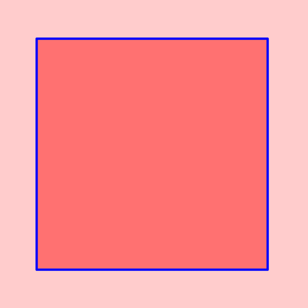
 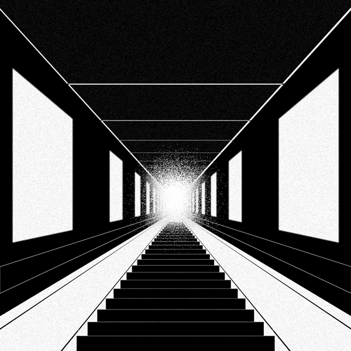
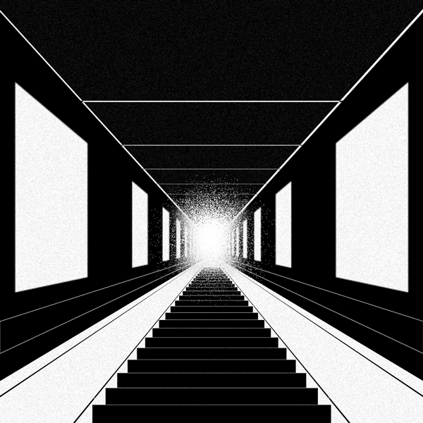


 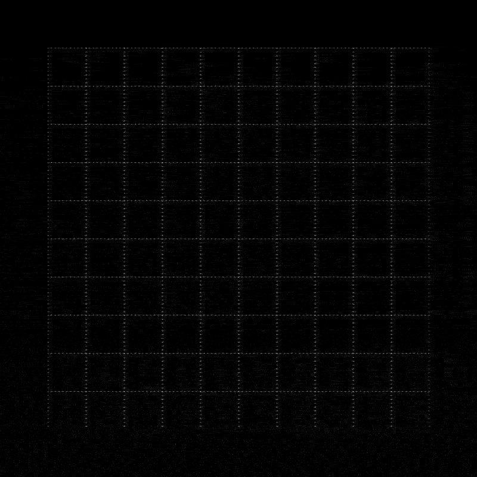
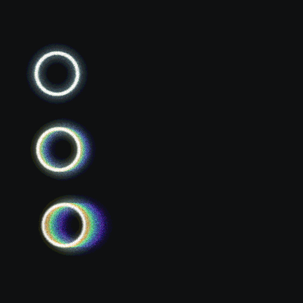
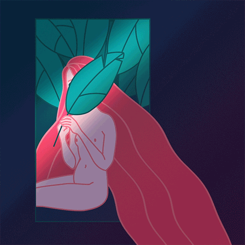
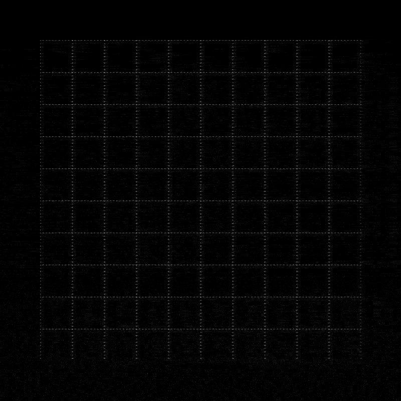
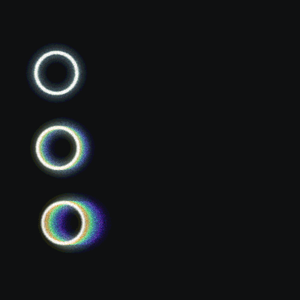
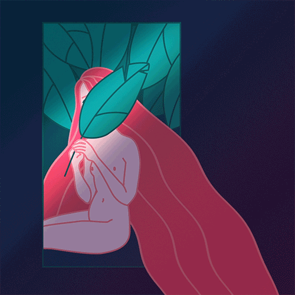


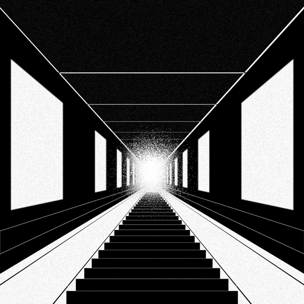
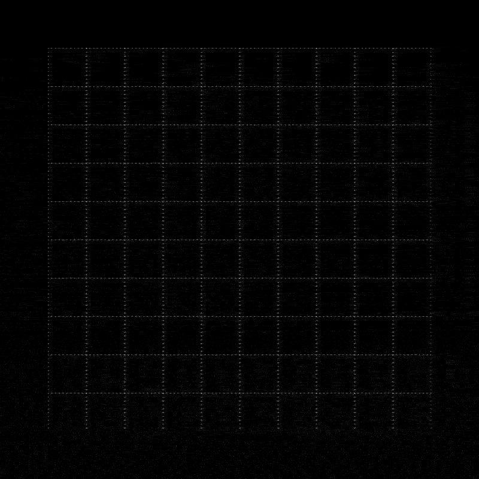
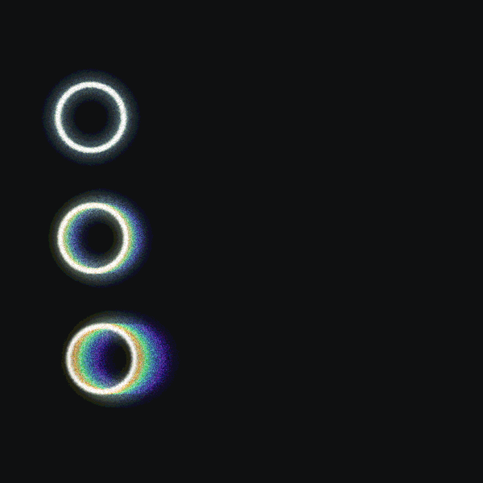
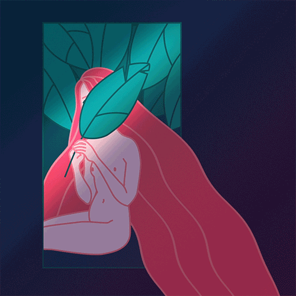
autopilot
A (very bootleg) image map project using Adobe After Effects.
blue
Audio-reactive animation test.
Demo Reel (2016)
A personal demo reel showcasing my projects completed in my three years at Dawson College. Made using Adobe Illustrator, Photoshop, and AfterEffects.